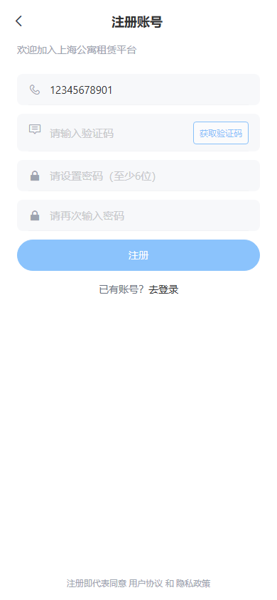

| 用例ID | 标题 | 模块 | 优先级 | 结果 | 耗时 | 备注/错误分析 | 截图证据 |
|---|---|---|---|---|---|---|---|
| TC-AUTH-001 | 正常注册流程 | 认证-注册 | P0 | ✅ 通过 | 4.1s | - | - |
| TC-AUTH-002 | 注册-手机号格式校验 | 认证-注册 | P1 | ❌ 失败 | 0.7s | AssertionError: 后端缺陷：非法号段手机号(12345678901)未被拦截，仍发送验证码(status=200)；后端仅校验长度/数字，未校验 ^1[3-9] 号段规则 |  |
| TC-AUTH-009 | 注册-两次密码不一致 | 认证-注册 | P1 | ✅ 通过 | 2.0s | - | - |
| TC-AUTH-010 | 未登录访问需鉴权页面 | 认证-注册 | P1 | ✅ 通过 | 2.3s | - | - |
| TC-AUTH-011 | 密码登录-正常流程 | 认证-登录 | P0 | ✅ 通过 | 3.4s | - | - |
| TC-AUTH-013 | 登录-密码错误 | 认证-登录 | P1 | ✅ 通过 | 2.7s | - | - |
| TC-AUTH-016 | 管理员登录-正常流程 | 认证-登录 | P0 | ✅ 通过 | 3.2s | - | - |
| TC-AUTH-017 | 首次登录强制身份选择 | 认证-登录 | P0 | ✅ 通过 | 3.5s | - | - |
| TC-AUTH-018 | 身份选择-租客 | 认证-身份选择 | P0 | ✅ 通过 | 6.6s | - | - |
| TC-AUTH-022 | 忘记密码-正常流程 | 认证-密码管理 | P0 | ✅ 通过 | 4.2s | - | - |
| TC-APT-001 | 房源列表-默认展示 | 房源-列表 | P0 | ✅ 通过 | 2.8s | - | - |
| TC-APT-004 | 房源列表-名称搜索 | 房源-列表 | P0 | ✅ 通过 | 4.9s | - | - |
| TC-APT-012 | 房源列表-空状态 | 房源-列表 | P1 | ✅ 通过 | 4.9s | - | - |
| TC-APT-013 | 未登录不显示收藏按钮 | 房源-列表 | P1 | ✅ 通过 | 2.8s | - | - |
| TC-APT-014 | 租客显示收藏按钮 | 房源-列表 | P1 | ✅ 通过 | 2.9s | - | - |
| TC-APT-015 | 商家显示发布按钮 | 房源-列表 | P0 | ✅ 通过 | 2.9s | - | - |
| TC-APT-016 | 租客不显示发布按钮 | 房源-列表 | P0 | ✅ 通过 | 2.8s | - | - |
| TC-APT-017 | 房源详情-正常展示 | 房源-详情 | P0 | ✅ 通过 | 5.4s | - | - |
| TC-APT-018 | 房源详情-收藏/取消收藏 | 房源-详情 | P0 | ✅ 通过 | 6.1s | - | - |
| TC-APT-020 | 房源详情-点击房型卡片 | 房源-详情 | P0 | ✅ 通过 | 5.8s | - | - |
| TC-APT-023 | 户型详情-正常展示 | 房源-户型详情 | P0 | ✅ 通过 | 2.7s | - | - |
| TC-FAV-006 | 我的收藏列表 | 收藏 | P0 | ✅ 通过 | 2.8s | - | - |
| TC-FAV-007 | 收藏列表空状态 | 收藏 | P1 | ✅ 通过 | 3.6s | - | - |
| TC-FAV-008 | 从收藏列表取消收藏 | 收藏 | P0 | ✅ 通过 | 5.4s | - | - |
| TC-FAV-009 | 收藏列表点击进入详情 | 收藏 | P1 | ✅ 通过 | 6.0s | - | - |
| TC-FAV-011 | 收藏列表-已删除房源不应展示 | 收藏 | P1 | ❌ 失败 | 0.0s | AssertionError: 已删除房源仍显示在我的收藏列表（后端未按房源状态/删除标记过滤）；注：需求对此场景未明确，见 YUZ-200 | - |
| TC-MSG-005 | 消息列表空状态 | 消息 | P1 | ✅ 通过 | 2.8s | - | - |
| TC-MSG-006 | 未登录访问消息 | 消息 | P1 | ✅ 通过 | 2.3s | - | - |
| TC-AUD-001 | 审核列表-提交审核Tab | 管理员审核 | P0 | ✅ 通过 | 2.9s | - | - |
| TC-AUD-004 | 审核列表-快捷通过 | 管理员审核 | P0 | ✅ 通过 | 7.9s | - | - |
| TC-AUD-005 | 审核列表-快捷驳回 | 管理员审核 | P0 | ✅ 通过 | 8.0s | - | - |
| TC-AUD-007 | 非管理员访问审核列表 | 管理员审核 | P1 | ✅ 通过 | 2.9s | - | - |
| TC-MER-001 | 发布房源-正常流程 | 商家房源 | P0 | ✅ 通过 | 3.1s | - | - |
| TC-MER-008 | 非商家访问发布页 | 商家房源 | P0 | ✅ 通过 | 2.9s | - | - |
| TC-MER-009 | 已上架房源列表 | 商家房源 | P0 | ✅ 通过 | 2.9s | - | - |
| TC-MER-057 | 审核中列表-展示pending和rejected不含approved | 商家房源 | P0 | ✅ 通过 | 5.5s | - | - |
| TC-MER-064 | 审核中列表-不展示已通过审核单 | 商家房源 | P1 | ✅ 通过 | 1.1s | - | - |
| TC-MER-068 | 审核中列表-展示已驳回审核单 | 商家房源 | P1 | ✅ 通过 | 5.6s | - | - |
| TC-UI-001 | 路由守卫-未登录拦截 | 前端-路由 | P0 | ✅ 通过 | 2.2s | - | - |
| TC-UI-002 | 路由守卫-角色权限校验 | 前端-路由 | P0 | ✅ 通过 | 2.9s | - | - |
| TC-UI-003 | 404页面 | 前端-路由 | P1 | ✅ 通过 | 2.4s | - | - |
| TC-UI-005 | 个人中心-租客菜单 | 前端-个人中心 | P0 | ✅ 通过 | 2.9s | - | - |
| TC-UI-006 | 个人中心-商家菜单 | 前端-个人中心 | P0 | ✅ 通过 | 2.9s | - | - |
| TC-UI-007 | 个人中心-管理员菜单 | 前端-个人中心 | P0 | ✅ 通过 | 2.9s | - | - |
| TC-UI-009 | 退出登录 | 前端-个人中心 | P0 | ✅ 通过 | 5.7s | - | - |
| TC-UI-010 | 登录页-模式切换 | 前端-交互 | P1 | ✅ 通过 | 1.2s | - | - |
| TC-UI-012 | 行政区街道联动 | 前端-交互 | P0 | ✅ 通过 | 4.2s | - | - |
| TC-SEC-002 | SQL注入防护 | 安全 | P1 | ✅ 通过 | 4.9s | - | - |
| TC-SEC-007 | Token伪造 | 安全 | P1 | ✅ 通过 | 0.0s | - | - |
| TC-CODE-001 | 登录密码错误返回 401002 | 统一响应码 | P0 | ✅ 通过 | 0.2s | - | - |
| TC-CODE-002 | 登录用户不存在与密码错误同码 | 统一响应码 | P0 | ✅ 通过 | 0.0s | - | - |
| TC-CODE-003 | 登录验证码错误返回 401003 | 统一响应码 | P1 | ✅ 通过 | 0.0s | - | - |
| TC-CODE-004 | 账号禁用返回 403002 | 统一响应码 | P1 | ✅ 通过 | 0.5s | - | - |
| TC-CODE-005 | 手机号已注册返回 409001 | 统一响应码 | P1 | ✅ 通过 | 0.3s | - | - |
| TC-CODE-006 | 资源不存在返回 404001 | 统一响应码 | P1 | ✅ 通过 | 0.0s | - | - |
| TC-CODE-007 | 已下架房源详情返回 410001 | 统一响应码 | P0 | ✅ 通过 | 0.1s | - | - |
| TC-CODE-008 | 未登录访问鉴权接口 401 | 统一响应码 | P0 | ✅ 通过 | 0.0s | - | - |
| TC-CODE-009 | 角色越权 403 | 统一响应码 | P0 | ✅ 通过 | 0.0s | - | - |
| TC-CODE-010 | 短信频控 429 | 统一响应码 | P1 | ✅ 通过 | 0.0s | - | - |
| TC-CODE-011 | 发布房源参数校验失败 400001 | 统一响应码 | P0 | ✅ 通过 | 0.0s | - | - |
| TC-CODE-012 | Token 刷新失败返回 401001 | 统一响应码 | P1 | ✅ 通过 | 0.0s | - | - |
| TC-CODE-013 | 前端拦截器 410001 不弹通用 toast | 统一响应码 | P1 | ✅ 通过 | 3.0s | - | - |
| TC-CODE-014 | 前端拦截器业务错误统一 toast | 统一响应码 | P1 | ✅ 通过 | 1.8s | - | - |
| TC-STAT-001 | 已上架房源下架 | 状态机 | P0 | ✅ 通过 | 0.1s | - | - |
| TC-STAT-002 | 非 published 下架被拒 | 状态机 | P1 | ✅ 通过 | 0.2s | - | - |
| TC-STAT-003 | 已下架房源重新上架 | 状态机 | P0 | ✅ 通过 | 0.2s | - | - |
| TC-STAT-004 | 非 offline 重新上架被拒 | 状态机 | P1 | ✅ 通过 | 0.2s | - | - |
| TC-STAT-005 | 有 pending 审核单时重新上架被拒 | 状态机 | P0 | ✅ 通过 | 0.2s | - | - |
| TC-STAT-006 | 撤回首次审核 | 状态机 | P0 | ✅ 通过 | 0.1s | - | - |
| TC-STAT-007 | 撤回变更审核 | 状态机 | P0 | ✅ 通过 | 0.1s | - | - |
| TC-STAT-008 | 其他状态撤回被拒 | 状态机 | P1 | ✅ 通过 | 0.1s | - | - |
| TC-STAT-009 | 下架房源在公共列表不可见 | 状态机 | P0 | ✅ 通过 | 0.2s | - | - |
| TC-STAT-010 | 商家「已下架」Tab 列表 | 状态机 | P0 | ✅ 通过 | 0.2s | - | - |
| TC-STAT-011 | 商家状态筛选多值 | 状态机 | P1 | ✅ 通过 | 0.2s | - | - |
| TC-STAT-012 | 商家默认列表仅 published | 状态机 | P1 | ✅ 通过 | 0.2s | - | - |
| TC-STAT-013 | 商家后台下架/重新上架按钮联动 | 状态机 | P0 | ✅ 通过 | 3.1s | - | - |
| TC-SHADOW-001 | 编辑名称触发变更审核 | 影子发布 | P0 | ✅ 通过 | 0.1s | - | - |
| TC-SHADOW-002 | 编辑位置触发变更审核 | 影子发布 | P0 | ✅ 通过 | 0.1s | - | - |
| TC-SHADOW-003 | 编辑经纬度触发变更审核 | 影子发布 | P1 | ✅ 通过 | 0.1s | - | - |
| TC-SHADOW-004 | 编辑封面图触发变更审核 | 影子发布 | P1 | ✅ 通过 | 0.2s | - | - |
| TC-SHADOW-005 | 编辑房型户型触发变更审核 | 影子发布 | P0 | ✅ 通过 | 0.2s | - | - |
| TC-SHADOW-006 | 编辑房型面积触发变更审核 | 影子发布 | P0 | ✅ 通过 | 0.3s | - | - |
| TC-SHADOW-007 | 编辑房型图片/内外窗触发变更审核 | 影子发布 | P1 | ✅ 通过 | 0.2s | - | - |
| TC-SHADOW-008 | 编辑描述免审直接更新 | 影子发布 | P0 | ✅ 通过 | 0.1s | - | - |
| TC-SHADOW-009 | 编辑联系电话免审直接更新 | 影子发布 | P1 | ✅ 通过 | 0.1s | - | - |
| TC-SHADOW-010 | 编辑费用字段免审直接更新 | 影子发布 | P1 | ✅ 通过 | 0.1s | - | - |
| TC-SHADOW-011 | 编辑楼层/设施/租金免审全量替换房型 | 影子发布 | P1 | ✅ 通过 | 0.2s | - | - |
| TC-SHADOW-012 | 已有 pending 变更审核再编辑 A 类被拒 | 影子发布 | P0 | ✅ 通过 | 0.1s | - | - |
| TC-SHADOW-013 | 变更审核期间公共列表展示旧版 | 影子发布 | P0 | ✅ 通过 | 0.1s | - | - |
| TC-SHADOW-014 | 变更审核期间详情展示旧版 | 影子发布 | P0 | ✅ 通过 | 0.1s | - | - |
| TC-SHADOW-015 | 变更审核通过应用新版本 | 影子发布 | P0 | ✅ 通过 | 0.2s | - | - |
| TC-SHADOW-016 | 变更审核驳回恢复旧版 | 影子发布 | P0 | ✅ 通过 | 0.2s | - | - |
| TC-SHADOW-017 | 编辑 offline 房源 A 类字段状态保持 offline | 影子发布 | P1 | ✅ 通过 | 0.2s | - | - |
| TC-SHADOW-018 | 管理员审核页变更审核中标识 | 影子发布 | P1 | ✅ 通过 | 3.0s | - | - |
| TC-LIST-001 | 默认按最新上架排序 | 列表 | P0 | ✅ 通过 | 0.1s | - | - |
| TC-LIST-002 | 价格升序排序 | 列表 | P0 | ✅ 通过 | 0.1s | - | - |
| TC-LIST-003 | 价格降序排序 | 列表 | P0 | ✅ 通过 | 0.1s | - | - |
| TC-LIST-004 | 非法 sort 参数容错 | 列表 | P1 | ✅ 通过 | 0.0s | - | - |
| TC-LIST-005 | 面积排序已下线 | 列表 | P1 | ✅ 通过 | 0.0s | - | - |
| TC-LIST-006 | 按名称搜索 | 列表 | P0 | ✅ 通过 | 0.0s | - | - |
| TC-LIST-007 | 按地址搜索 | 列表 | P0 | ✅ 通过 | 0.0s | - | - |
| TC-LIST-008 | 按描述搜索 | 列表 | P0 | ✅ 通过 | 0.0s | - | - |
| TC-LIST-009 | 搜索相关性排序 | 列表 | P1 | ✅ 通过 | 0.0s | - | - |
| TC-LIST-010 | 关键词无结果空态 | 列表 | P1 | ✅ 通过 | 0.0s | - | - |
| TC-LIST-011 | 搜索词超过 30 字截断 | 列表 | P2 | ⏭️ 跳过 | 2.9s | 搜索框未设置 maxlength（截断可能由 JS 实现，无法静态断言） | - |
| TC-LIST-012 | 搜索历史本地记录与去重 | 列表 | P1 | ⏭️ 跳过 | 0.0s | 搜索历史交互（搜索后弹窗关闭、历史 key 未确认）需人工定位，本轮跳过 | - |
| TC-LIST-013 | 搜索历史最多 10 条 | 列表 | P2 | ⏭️ 跳过 | 0.0s | 搜索历史交互需人工定位，本轮跳过 | - |
| TC-LIST-014 | 搜索历史单条删除与清空 | 列表 | P1 | ⏭️ 跳过 | 0.0s | 搜索历史交互需人工定位，本轮跳过 | - |
| TC-LIST-015 | 行政区筛选 | 列表 | P0 | ✅ 通过 | 0.1s | - | - |
| TC-LIST-016 | 街道多选筛选 | 列表 | P0 | ✅ 通过 | 0.1s | - | - |
| TC-LIST-017 | 街道联动清空 | 列表 | P1 | ✅ 通过 | 2.8s | - | - |
| TC-LIST-018 | 户型/租期多选筛选 | 列表 | P1 | ✅ 通过 | 0.1s | - | - |
| TC-LIST-019 | 价格区间筛选 | 列表 | P1 | ✅ 通过 | 0.1s | - | - |
| TC-LIST-020 | 非法 district_id 容错 | 列表 | P2 | ✅ 通过 | 0.0s | - | - |
| TC-LIST-021 | 旧单值参数向后兼容 | 列表 | P2 | ✅ 通过 | 0.1s | - | - |
| TC-LIST-022 | 地铁站点筛选命中 | 列表 | P1 | ⏭️ 跳过 | 0.0s | 未预置地铁站点数据 | - |
| TC-LIST-023 | 地铁筛选无坐标房源不命中 | 列表 | P1 | ⏭️ 跳过 | 0.0s | 未预置地铁站点数据 | - |
| TC-LIST-024 | 地铁站点不存在返回空 | 列表 | P2 | ⏭️ 跳过 | 0.0s | 未预置地铁站点数据 | - |
| TC-LIST-025 | 分页默认与最大条数 | 列表 | P1 | ✅ 通过 | 0.2s | - | - |
| TC-LIST-026 | 切换排序重置分页并回到顶部 | 列表 | P1 | ✅ 通过 | 2.2s | - | - |
| TC-LIST-027 | 排序接口失败降级提示 | 列表 | P2 | ⏭️ 跳过 | 0.0s | 需模拟接口超时，本轮跳过 | - |
| TC-LIST-028 | 列表/地图视图切换 | 列表 | P1 | ✅ 通过 | 3.9s | - | - |
| TC-LIST-029 | 列表卡片展示核验徽章 | 列表 | P1 | ✅ 通过 | 2.9s | - | - |
| TC-MAP-001 | 地理编码成功返回坐标 | 地图 | P0 | ⏭️ 跳过 | 0.0s | AMAP_KEY 未配置，无法验证地理编码成功路径 | - |
| TC-MAP-002 | 地理编码未配置 Key | 地图 | P1 | ✅ 通过 | 0.0s | - | - |
| TC-MAP-003 | 地理编码失败 | 地图 | P1 | ✅ 通过 | 0.0s | - | - |
| TC-MAP-004 | 地理编码地址为空校验 | 地图 | P2 | ✅ 通过 | 0.0s | - | - |
| TC-MAP-005 | 地图配置接口 | 地图 | P1 | ✅ 通过 | 0.0s | - | - |
| TC-MAP-006 | 无坐标房源周边 POI 返回空 | 地图 | P1 | ✅ 通过 | 0.0s | - | - |
| TC-MAP-007 | 有坐标房源周边 POI | 地图 | P1 | ✅ 通过 | 0.0s | - | - |
| TC-MAP-008 | 地铁线路列表 | 地图 | P1 | ⏭️ 跳过 | 0.0s | 未预置地铁线路数据（无数据返回空数组） | - |
| TC-MAP-009 | 发布页地理编码落点 | 地图 | P0 | ✅ 通过 | 2.9s | - | - |
| TC-MAP-010 | 地理编码失败可手动打点 | 地图 | P0 | ⏭️ 跳过 | 0.0s | 需模拟地理编码失败 + 地图交互，本轮跳过 | - |
| TC-MAP-011 | 发布未定位房源可提交 | 地图 | P1 | ✅ 通过 | 0.1s | - | - |
| TC-MAP-012 | 存量补坐标命令 | 地图 | P2 | ⏭️ 跳过 | 0.0s | 需运行 Django 管理命令，本轮跳过 | - |
| TC-CMP-001 | 两套房源对比 | 对比 | P0 | ✅ 通过 | 0.1s | - | - |
| TC-CMP-002 | 三套房源对比 | 对比 | P0 | ✅ 通过 | 0.1s | - | - |
| TC-CMP-003 | 少于 2 套被拒 | 对比 | P1 | ✅ 通过 | 0.0s | - | - |
| TC-CMP-004 | 超过 3 套被拒 | 对比 | P1 | ✅ 通过 | 0.0s | - | - |
| TC-CMP-005 | ids 为空被拒 | 对比 | P1 | ✅ 通过 | 0.0s | - | - |
| TC-CMP-006 | ids 非法格式 | 对比 | P2 | ✅ 通过 | 0.0s | - | - |
| TC-CMP-007 | 对比含不可见房源自动过滤 | 对比 | P1 | ✅ 通过 | 0.1s | - | - |
| TC-CMP-008 | 长按进入对比模式 | 对比 | P1 | ⏭️ 跳过 | 0.0s | 长按进入对比模式需精确手势交互定位，本轮跳过 | - |
| TC-CMP-009 | 对比最多选 3 套 | 对比 | P1 | ⏭️ 跳过 | 0.0s | 需长按选择 3 套后尝试选第 4 套，本轮跳过 | - |
| TC-HIS-001 | 浏览历史记录 | 浏览历史 | P1 | ✅ 通过 | 4.3s | - | - |
| TC-HIS-002 | 浏览历史空态 | 浏览历史 | P1 | ✅ 通过 | 3.8s | - | - |
| TC-HIS-003 | 清空浏览历史 | 浏览历史 | P1 | ✅ 通过 | 4.7s | - | - |
| TC-HIS-004 | 历史点击进入详情 | 浏览历史 | P1 | ✅ 通过 | 5.8s | - | - |
| TC-HIS-005 | 未登录可用 | 浏览历史 | P1 | ✅ 通过 | 2.3s | - | - |
| TC-PUB-001 | 面积必填校验（前端） | 发布字段 | P1 | ⏭️ 跳过 | 0.0s | 面积必填校验需打开房型弹窗并提交空面积，本轮跳过 | - |
| TC-PUB-002 | 面积合法值（边界 0.5） | 发布字段 | P1 | ✅ 通过 | 0.1s | - | - |
| TC-PUB-003 | 面积合法值（边界 500） | 发布字段 | P1 | ✅ 通过 | 0.1s | - | - |
| TC-PUB-004 | 面积非法值（0.4） | 发布字段 | P2 | ✅ 通过 | 0.1s | - | - |
| TC-PUB-005 | 面积非法值（500.1） | 发布字段 | P2 | ✅ 通过 | 0.1s | - | - |
| TC-PUB-006 | 面积后端允许为空（差异标注） | 发布字段 | P2 | ✅ 通过 | 0.1s | - | - |
| TC-PUB-007 | 可入住时间选择 | 发布字段 | P1 | ⏭️ 跳过 | 0.0s | 可入住时间选择需打开房型弹窗并操作日期组件，本轮跳过 | - |
| TC-PUB-008 | 物业费 0 / 水电 civilian / 服务费 0 | 发布字段 | P1 | ✅ 通过 | 0.1s | - | - |
| TC-PUB-009 | 物业费非法值（负数） | 发布字段 | P2 | ✅ 通过 | 0.1s | - | - |
| TC-PUB-010 | 水电费非法编码 | 发布字段 | P2 | ✅ 通过 | 0.0s | - | - |
| TC-PUB-011 | 其他费用超长（101 字） | 发布字段 | P2 | ✅ 通过 | 0.1s | - | - |
| TC-PUB-012 | 发布页实拍提示文案 | 发布字段 | P2 | ✅ 通过 | 2.9s | - | - |
| TC-PUB-013 | 房型图片拖拽排序 | 发布字段 | P1 | ⏭️ 跳过 | 0.0s | 拖拽排序需上传多图 + 拖拽交互，本轮跳过 | - |
| TC-PUB-014 | 上传失败单张重试 | 发布字段 | P1 | ⏭️ 跳过 | 0.0s | 需模拟上传失败，本轮跳过 | - |
| TC-PUB-015 | 草稿自动保存与恢复 | 发布字段 | P1 | ⏭️ 跳过 | 2.8s | 发布页未使用 localStorage 草稿键（或键名不同） | - |
| TC-PUB-016 | 提交成功后清除草稿 | 发布字段 | P1 | ⏭️ 跳过 | 0.0s | 依赖草稿恢复弹窗交互，本轮跳过 | - |
| TC-VER-001 | 管理员设置核验标识 | 平台核验 | P1 | ✅ 通过 | 0.1s | - | - |
| TC-VER-002 | 管理员取消核验标识 | 平台核验 | P1 | ✅ 通过 | 0.2s | - | - |
| TC-VER-003 | 审核通过时勾选核验 | 平台核验 | P1 | ✅ 通过 | 0.2s | - | - |
| TC-VER-004 | 非管理员设置核验被拒 | 平台核验 | P1 | ✅ 通过 | 0.1s | - | - |
| TC-VER-005 | 详情页展示商家认证信息 | 平台核验 | P1 | ✅ 通过 | 0.2s | - | - |
| TC-STS-001 | 商家统计返回浏览与收藏 | 商家统计 | P1 | ✅ 通过 | 0.0s | - | - |
| TC-STS-002 | 浏览量按用户+天去重 | 商家统计 | P1 | ✅ 通过 | 0.2s | - | - |
| TC-STS-003 | 商家查看自己房源不计浏览 | 商家统计 | P2 | ⏭️ 跳过 | 0.0s | 依赖浏览日志按用户类型过滤，需对比前后计数，本轮简化跳过 | - |
| TC-STS-004 | 非商家访问统计被拒 | 商家统计 | P1 | ✅ 通过 | 0.0s | - | - |
| TC-STS-005 | 商家后台顶部统计展示 | 商家统计 | P1 | ✅ 通过 | 2.9s | - | - |
| TC-NOTIFY-001 | 首次驳回消息点击跳编辑页 | 消息跳转 | P0 | ✅ 通过 | 5.1s | - | - |
| TC-NOTIFY-002 | 变更驳回消息点击跳编辑页 | 消息跳转 | P0 | ✅ 通过 | 0.2s | - | - |
| TC-NOTIFY-003 | 审核通过消息点击跳详情页 | 消息跳转 | P0 | ✅ 通过 | 0.3s | - | - |
| TC-NOTIFY-004 | 消息关联房源已删除降级 | 消息跳转 | P1 | ✅ 通过 | 0.2s | - | - |
| TC-NOTIFY-005 | 系统通知点击不跳转 | 消息跳转 | P1 | ⏭️ 跳过 | 0.0s | 需系统类型消息数据，本轮跳过 | - |
| TC-NOTIFY-006 | 消息列表展示关联房源名与类型标签 | 消息跳转 | P1 | ✅ 通过 | 2.9s | - | - |
| TC-TOKEN-001 | access 过期自动 refresh 重放 | Token刷新 | P0 | ⏭️ 跳过 | 0.0s | 需精确控制 access 过期时间，本轮以接口层 TC-TOKEN-005 覆盖 refresh 逻辑 | - |
| TC-TOKEN-002 | refresh 也过期则登出 | Token刷新 | P0 | ⏭️ 跳过 | 0.0s | 需精确控制双 token 过期时间，本轮跳过 | - |
| TC-TOKEN-003 | 并发请求仅一次 refresh | Token刷新 | P1 | ⏭️ 跳过 | 0.0s | 需前端并发观测，本轮跳过 | - |
| TC-TOKEN-004 | refresh 接口返回 401001 走登出 | Token刷新 | P1 | ✅ 通过 | 0.0s | - | - |
| TC-TOKEN-005 | refresh 返回新 token 双 token 更新 | Token刷新 | P1 | ✅ 通过 | 0.5s | - | - |
| TC-AUDIT-001 | 变更审核详情对比展示与变更字段高亮 | 审核详情 | P0 | ✅ 通过 | 0.1s | - | - |
| TC-AUDIT-002 | 变更审核详情影子发布标识 | 审核详情 | P1 | ⏭️ 跳过 | 0.0s | 需打开变更审核详情页核对警示文案，接口层已由 TC-SHADOW-018 覆盖 | - |
| TC-AUDIT-003 | 审核详情勾选平台核验后通过 | 审核详情 | P1 | ⏭️ 跳过 | 0.0s | 由 TC-VER-003 覆盖 | - |
| TC-AUDIT-004 | 驳回原因必填（空） | 审核详情 | P1 | ✅ 通过 | 0.1s | - | - |
| TC-AUDIT-005 | 驳回原因纯空格被拒 | 审核详情 | P1 | ✅ 通过 | 0.1s | - | - |
| TC-AUDIT-006 | 已处理审核单重复操作 | 审核详情 | P1 | ✅ 通过 | 0.1s | - | - |
| TC-AUDIT-007 | 商家审核列表仅展示 pending/rejected | 商家审核 | P0 | ✅ 通过 | 1.1s | - | - |
| TC-AUDIT-008 | 商家审核列表 pending 优先排序 | 商家审核 | P1 | ✅ 通过 | 1.2s | - | - |
| TC-AUDIT-009 | 商家审核列表撤回按钮联动 | 商家审核 | P0 | ✅ 通过 | 0.2s | - | - |
| TC-AUDIT-010 | 删除房源同步软删除 pending 审核单 | 商家审核 | P1 | ✅ 通过 | 0.1s | - | - |
| TC-AUDIT-011 | 软删除兜底：已删除房源关联 rejected 审核单 | 商家审核 | P2 | ⏭️ 跳过 | 0.0s | 需求待澄清（潜在缺陷），本轮跳过 | - |
| TC-AUDIT-012 | change_reviewing 房源不显示在已上架 Tab | 商家审核 | P1 | ✅ 通过 | 0.2s | - | - |
| PICT-1-01 | 列表组合筛选 PICT-1-01 | PICT-1 列表筛选 | P2 | ✅ 通过 | 0.1s | - | - |
| PICT-1-02 | 列表组合筛选 PICT-1-02 | PICT-1 列表筛选 | P2 | ✅ 通过 | 0.0s | - | - |
| PICT-1-03 | 列表组合筛选 PICT-1-03 | PICT-1 列表筛选 | P2 | ✅ 通过 | 0.0s | - | - |
| PICT-1-04 | 列表组合筛选 PICT-1-04 | PICT-1 列表筛选 | P2 | ✅ 通过 | 0.0s | - | - |
| PICT-1-05 | 列表组合筛选 PICT-1-05 | PICT-1 列表筛选 | P2 | ✅ 通过 | 0.0s | - | - |
| PICT-1-06 | 列表组合筛选 PICT-1-06 | PICT-1 列表筛选 | P2 | ✅ 通过 | 0.0s | - | - |
| PICT-1-07 | 列表组合筛选 PICT-1-07 | PICT-1 列表筛选 | P2 | ✅ 通过 | 0.0s | - | - |
| PICT-1-08 | 列表组合筛选 PICT-1-08 | PICT-1 列表筛选 | P2 | ✅ 通过 | 0.0s | - | - |
| PICT-1-09 | 列表组合筛选 PICT-1-09 | PICT-1 列表筛选 | P2 | ✅ 通过 | 0.0s | - | - |
| PICT-1-10 | 列表组合筛选 PICT-1-10 | PICT-1 列表筛选 | P2 | ✅ 通过 | 0.0s | - | - |
| PICT-1-11 | 列表组合筛选 PICT-1-11 | PICT-1 列表筛选 | P2 | ✅ 通过 | 0.0s | - | - |
| PICT-1-12 | 列表组合筛选 PICT-1-12 | PICT-1 列表筛选 | P2 | ✅ 通过 | 0.0s | - | - |
| PICT-1-13 | 列表组合筛选 PICT-1-13 | PICT-1 列表筛选 | P2 | ✅ 通过 | 0.0s | - | - |
| PICT-1-14 | 列表组合筛选 PICT-1-14 | PICT-1 列表筛选 | P2 | ✅ 通过 | 0.0s | - | - |
| PICT-1-15 | 列表组合筛选 PICT-1-15 | PICT-1 列表筛选 | P2 | ✅ 通过 | 0.0s | - | - |
| PICT-1-16 | 列表组合筛选 PICT-1-16 | PICT-1 列表筛选 | P2 | ✅ 通过 | 0.1s | - | - |
| PICT-1-17 | 列表组合筛选 PICT-1-17 | PICT-1 列表筛选 | P2 | ✅ 通过 | 0.0s | - | - |
| PICT-1-18 | 列表组合筛选 PICT-1-18 | PICT-1 列表筛选 | P2 | ✅ 通过 | 0.0s | - | - |
| PICT-1-19 | 列表组合筛选 PICT-1-19 | PICT-1 列表筛选 | P2 | ✅ 通过 | 0.0s | - | - |
| PICT-1-20 | 列表组合筛选 PICT-1-20 | PICT-1 列表筛选 | P2 | ✅ 通过 | 0.0s | - | - |
| PICT-1-21 | 列表组合筛选 PICT-1-21 | PICT-1 列表筛选 | P2 | ✅ 通过 | 0.0s | - | - |
| PICT-1-22 | 列表组合筛选 PICT-1-22 | PICT-1 列表筛选 | P2 | ✅ 通过 | 0.0s | - | - |
| PICT-1-23 | 列表组合筛选 PICT-1-23 | PICT-1 列表筛选 | P2 | ✅ 通过 | 0.0s | - | - |
| PICT-1-24 | 列表组合筛选 PICT-1-24 | PICT-1 列表筛选 | P2 | ✅ 通过 | 0.0s | - | - |
| PICT-1-25 | 列表组合筛选 PICT-1-25 | PICT-1 列表筛选 | P2 | ✅ 通过 | 0.0s | - | - |
| PICT-2-01 | 编辑变更审核触发 PICT-2-01 (apt_A/published/yes) | PICT-2 变更审核 | P2 | ✅ 通过 | 0.2s | - | - |
| PICT-2-02 | 编辑变更审核触发 PICT-2-02 (apt_A/offline/no) | PICT-2 变更审核 | P2 | ✅ 通过 | 0.2s | - | - |
| PICT-2-03 | 编辑变更审核触发 PICT-2-03 (room_A/published/no) | PICT-2 变更审核 | P2 | ✅ 通过 | 0.3s | - | - |
| PICT-2-04 | 编辑变更审核触发 PICT-2-04 (room_A/offline/yes) | PICT-2 变更审核 | P2 | ✅ 通过 | 0.2s | - | - |
| PICT-2-05 | 编辑变更审核触发 PICT-2-05 (apt_exempt/published/yes) | PICT-2 变更审核 | P2 | ✅ 通过 | 0.2s | - | - |
| PICT-2-06 | 编辑变更审核触发 PICT-2-06 (apt_exempt/offline/no) | PICT-2 变更审核 | P2 | ✅ 通过 | 0.2s | - | - |
| PICT-2-07 | 编辑变更审核触发 PICT-2-07 (room_exempt/published/yes) | PICT-2 变更审核 | P2 | ✅ 通过 | 0.2s | - | - |
| PICT-2-08 | 编辑变更审核触发 PICT-2-08 (room_exempt/offline/no) | PICT-2 变更审核 | P2 | ✅ 通过 | 0.2s | - | - |
| PICT-2-09 | 编辑变更审核触发 PICT-2-09 (mixed_A_exempt/published/yes) | PICT-2 变更审核 | P2 | ✅ 通过 | 0.2s | - | - |
| PICT-2-10 | 编辑变更审核触发 PICT-2-10 (mixed_A_exempt/offline/no) | PICT-2 变更审核 | P2 | ✅ 通过 | 0.2s | - | - |